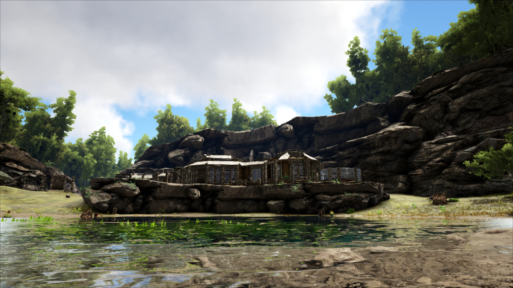

Hidden Lake

Tired? Good. We will rest at the beautiful oasis for the night. Play in the water, take a drink, it’s fresh, and be wary of the forest, because Dilophosaurus like to hide as well as Raptors. In the morning, we will take the hardest trek of all, right until we reach the Tek Cave. Feel free to take pictures! We have a photo board at the hub, take them and lets see if you are better than some of our top photographers both with us and past tourists
Ice Beach

Getting on our griffins in the morning, we fly. We have lost too many of our own to the creatures of the north and Far’s Peak, to which we’ve only recently made safe. But the journey must go on, and as we fly over the icey north, take notice and try to spot the direwolves hunting the mammoths, the Ovis enjoying the snow, the Megaloceros plowing through the white plains. See how the Chalicotherium and Megatherium tussle, how the wholly rhinos fight off the feather yutyrannus. See if you can spot, the legendary Unicorn as we go above the Winter’s Mouth, flyby the Frozen Fang, and get low to cross over the Frigid Plains into Whitesky Peak to see the Blue Obelisk, floating above us all.
Volcano

We go down towards the island, to the top of the Volcano where our final trek awaits. At the entrance, our convoy through the mountain and Tek Armor enough for you all. As we reach the final gate and endure the heat we will remind you to stay close to our hunters, this is the most dangerous part of the island, but soon, we come across the gate and we will arrive back at the hub where you can buy souvenirs and have a hearty dinner.